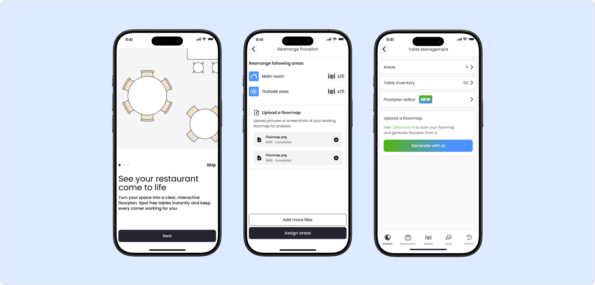
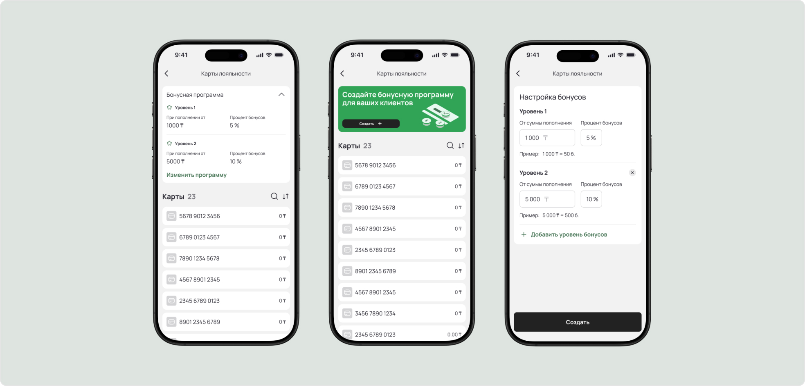
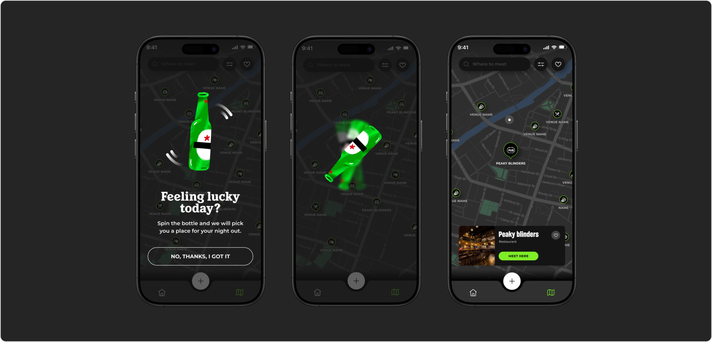

Carbanara
Product, UX-Design
Система управления рестораном: живая очередь и интерактивный план зала

Открыть кейс →CloudCore
Product, UX-Design
Карты лояльности для IoT-автомойки — от концепции до запуска

Открыть кейс →NDA
Product, UX-Design
Приложение для друзей: выбрать место вместе и собраться отдохнуть

Открыть кейс →